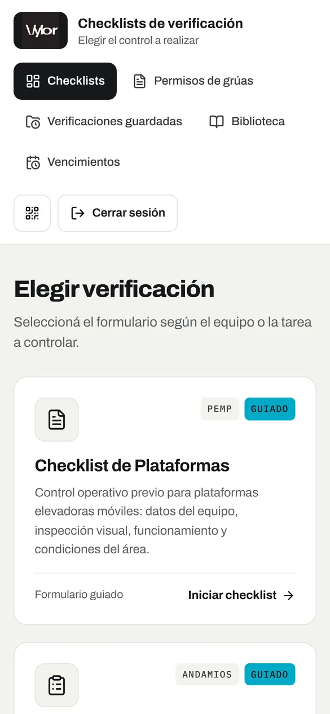

Selector de checklists: formularios guiados y PDF completables.
Herramienta internaPC + celular
Vylor · Checklists de seguridad industrial
El problema: los operarios completaban checklists y permisos de trabajo en papel, en obra y muchas veces sin señal.
Lo que hice: una app web donde completan cada checklist o permiso paso a paso. Guarda borradores sin conexión y al terminar genera el PDF final firmado.
ReactTypeScriptSupabase
5 capturas · datos de ejemplo